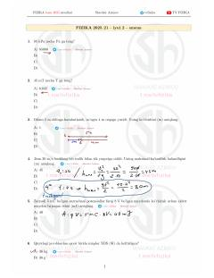

FBFizika fanidan 2025-yilgi test savollari va ularning batafsil yechimlari to'plami.
Ushbu qo'llanma 2025-yilgi fizika fanidan test savollari bazasining 21-iyul, 2-smena variantlari uchun yechimlarni o'z ichiga oladi. Kitobda mexanika, elektr va optika bo'limlariga oid masalalar tahlil qilingan.